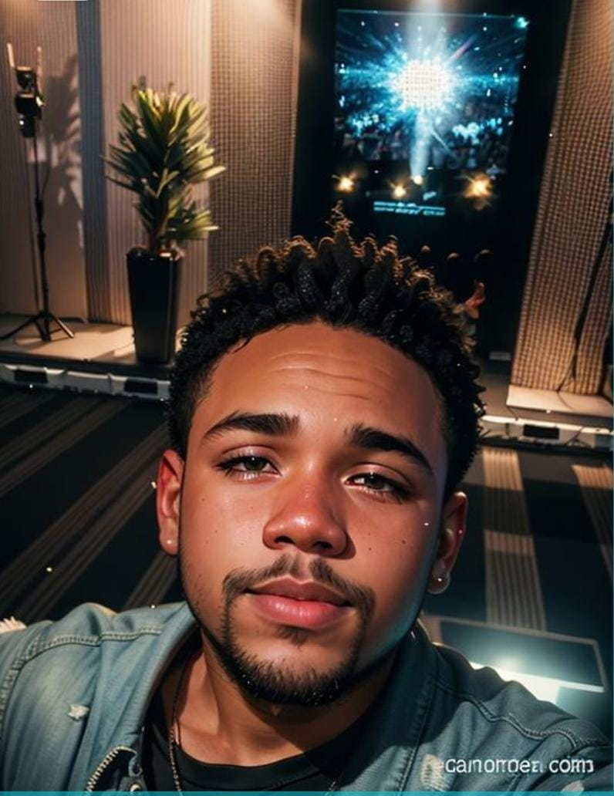

?

Como as pessoas me vê
-
Pessoalmente, sou conhecido por ser interativo, extrovertido e atencioso. Gosto de conversar, entender
as pessoas ao meu redor e construir boas relações. Além disso, meu lado analítico e concentrado me ajuda
a lidar com os desafios do dia a dia com calma e clareza. Tenho facilidade em analisar situações,
identificar soluções e trabalhar em equipe para alcançar resultados.